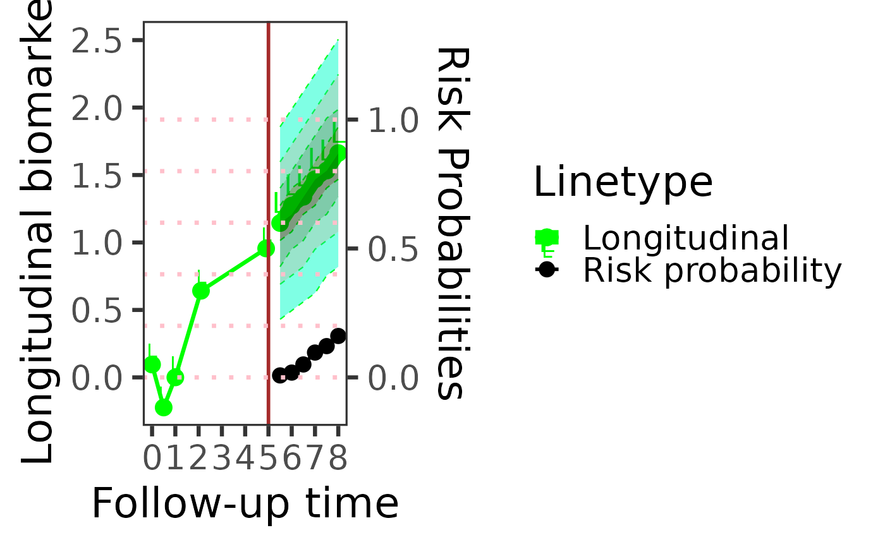

Plot risk and future biomarker predictions across a horizon sweep
Source:R/predictPlot.R
predictPlot.RdFixes the landmark time at prediction_time and sweeps forward over
a range of prediction horizons, calling predictRisk
(and, when bio_pred is supplied, predictLongitudinal)
at each horizon to trace out how predicted event risk (and, optionally,
the predicted density/point-forecast of biomarker bio_pred) evolves
the further out the prediction window extends from a single fixed
landmark. This contrasts with riskPlot, which instead fixes
the horizon and sweeps over a set of landmark times.
Usage
predictPlot(
data_predict_all_one,
long_fit_all,
survival_fit_all,
prediction_time = 4,
horizon = seq(0, 3, 0.5),
time_variable,
survival_variable_all,
survival_trans_function,
bandcount1 = "auto",
bandcount2 = "auto",
bandcount3 = "auto",
bio_his = 1,
bio_pred = 1,
density = 1,
n_cores = 1
)Arguments
- data_predict_all_one
This involves a collection of
data.frameone object for dynamic prediction and making plots, each corresponding to a distinct longitudinal outcome. These data frames should contain the variables specified inlong_sub_fixedandlong_sub_random. Utilizing a list structure allows for the incorporation of multiple longitudinal outcomes, each potentially following different measurement protocols. In instances where all longitudinal outcomes are recorded at identical time points across patients, a singulardata.frameobject may be used in alist. Alternatively, a single baredata.frame(not wrapped in a list) may be supplied directly; it is then reused for every longitudinal outcome. It is presumed that each data frame is structured in a long format.- long_fit_all
Outputs from the model fitting process using the
nlmepackage, encompassing the results and parameters obtained from the analysis.- survival_fit_all
Results and parameters generated from the model fitting procedure, utilizing the
coxphfunction. These outputs include the comprehensive findings and variables derived from the analysis.- prediction_time
Time used to make the prediction.
- horizon
Prediction horizon.
- time_variable
The name of time variable in linear mixed model.
- survival_variable_all
The name of the transformed time-to-event outcomes variable.
- survival_trans_function
The transformation function used for time-to-event outcomes, in the order of
survival_variable_all.- bandcount1
The number of grid points spanning the prediction window, from
prediction_timetoprediction_time + horizon. Larger values give a more accurate but slower estimate. Defaults to"auto", which resolves it once, before looping overhorizon(using the largest requested horizon as a representative probe), by doubling from a built-in starting value until the predicted risk stabilizes; seepredictRisk'sbandcount1for details of that search. The resolved value is then reused, fixed, for every point inhorizon– it is not re-searched on every iteration.- bandcount2
The number of grid points used to approximate integrating out to infinity when normalizing the predicted risk/density. A wider follow-up range needs a larger
bandcount2to keep the grid spacing comparable. Defaults to"auto"; resolved the same way asbandcount1(jointly with it, when both are"auto").- bandcount3
The number of points in the candidate-biomarker-value grid used to build the predicted density curve; controls the resolution of the density, not a time integral. Defaults to
"auto"; resolved the same way, but only whenbio_predis non-NULL(it is unused otherwise).Pass explicit numbers instead of
"auto"for full manual control, or usecheckBandcountConvergence()(applied topredictRisk()/predictLongitudinal()directly) to inspect the convergence behavior yourself. See alsovignette("BJM-intro", package = "BJM")for further guidance on choosingbandcount1/bandcount2/bandcount3.- bio_his
Which biomarker history will be plotted
- bio_pred
Indicator, predict future biomarker or not, if NULL do not predict
- density
Indicator, plot future biomarker density or not, if NULL do not plot
- n_cores
Number of CPU cores to use for computing the prediction at each point in
horizon. Each point is computed independently, so this loop can be dispatched across cores. Defaults to1(serial execution; identical behavior/output to versions of this function without this argument). Values greater than1useparallel::mclapply(), which relies on forking and is therefore only actually parallel on Unix-like systems (Linux, macOS); on Windows,mclapply()silently runs the iterations serially regardless ofn_cores(a limitation of R's fork-based parallelism, not of this package). Parallel execution produces exactly the same numeric result as serial execution – only the order in which iterations are computed (not the order results are assembled in) changes.
Examples
# \donttest{
data(pbc3)
data_survival_fitting = pbc3[!duplicated(pbc3$id), ]
form_marginal_surv = Surv(years, status3) ~ age + sex
form_conditional_cr = NULL
survival_fit_all = survivalSub(data_survival_fitting, form_marginal_surv,
form_conditional_cr)
long_sub_fixed = list(
"long1" = serBilir ~ year + age + sex + (years) + (years) * year,
"long2" = prothrombin ~ year + age + sex + (years) + (years) * year,
"long3" = albumin ~ year + age + age * year + sex + (years) + (years) * year,
"long4" = alkaline ~ year + age + sex + (years) + (years) * year,
"long5" = SGOT ~ year + age + sex + (years) + (years) * year,
"long6" = platelets ~ year + age + sex + (years) + (years) * year)
long_sub_random =list(
"long1" = ~ year| id,
"long2" = ~ year| id,
"long3" = ~ year| id,
"long4" = ~ year| id,
"long5" = ~ year| id,
"long6" = ~ year| id)
survival_variable_all = list(
"Tyears1", "Tyears2", "Tyears3", "Tyears4"
)
survival_trans_function = list(
fun1 = function(x){abs(x - 1)},
fun2 = function(x){abs(x - 3)},
fun3 = function(x){abs(x - 5)},
fun4 = function(x){abs(x - 7)}
)
# Complete case analysis
data_fit_all = list()
for(i in seq_len(length(long_sub_fixed))){
data_fit_all[[i]] = pbc3[pbc3$status3 == 1, ]
}
# fitting longitudinal submodel
long_fit_all = longitudinalSub(data_fit_all, long_sub_fixed, long_sub_random)
i_PID = 2
data.raw.predict.plot = pbc3[pbc3$id == i_PID, ]
data_predict_all_one = list(data.raw.predict.plot, data.raw.predict.plot, data.raw.predict.plot,
data.raw.predict.plot, data.raw.predict.plot, data.raw.predict.plot)
# plot biomarker 1 history, predict future biomarker
predictPlot(data_predict_all_one, long_fit_all, survival_fit_all,
prediction_time = 5, bio_his = 1, bio_pred = 1,
horizon = seq(0.5, 3.0, 0.5), time_variable = "year",
survival_variable_all, survival_trans_function,
bandcount1 = 10, bandcount2 = 10, bandcount3 = 200)
#> Warning: Using `size` aesthetic for lines was deprecated in ggplot2 3.4.0.
#> ℹ Please use `linewidth` instead.
#> ℹ The deprecated feature was likely used in the BJM package.
#> Please report the issue at <https://github.com/wenhaoli18/BJM/issues>.

# }